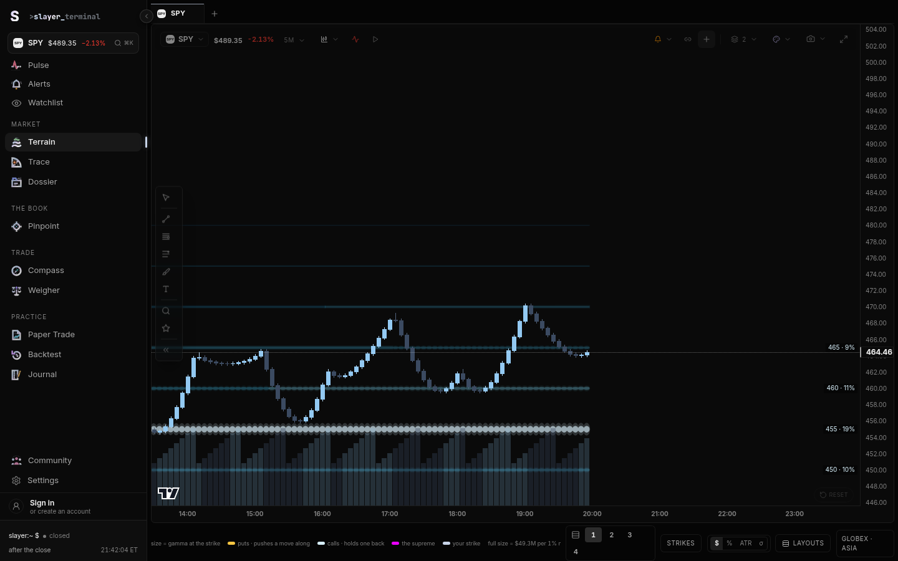
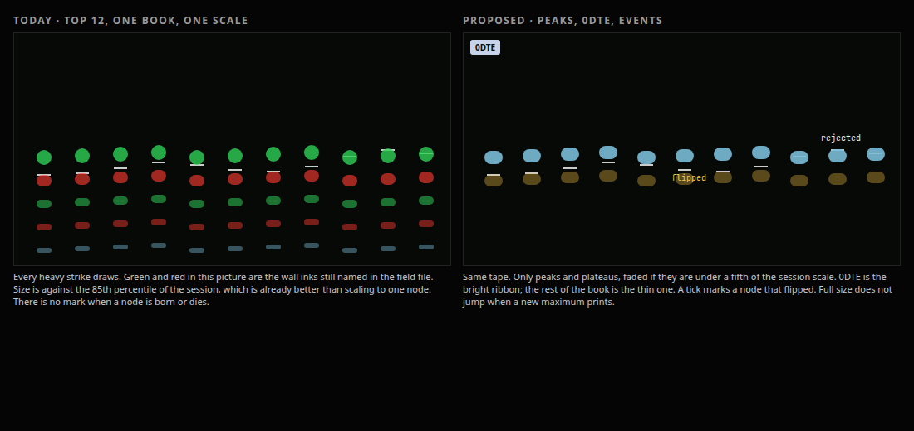

Slayer · Terrain · master brief
One read of the three briefs: what is broken, what was measured, how the beads work, how a signed book replaces the open-interest guess, and where the sell side has already moved.
Terrain already draws the object a gamma trader wants: candles, a strike ribbon, and walls, in one pane. OpenMarket’s own guide says its heats and flips disagree, and cloning its 241 studies would not fix Terrain. Three bugs do.
ExposureField returns early while the book is empty, then calls more hooks when it arrives. React throws, and the route boundary replaces the desk. A per-pane boundary is the net. Moving the hooks is the fix.Route /terrain, slayer/src/pages/terrain/Terrain.tsx. Each pane is a StrikeChart. The ribbon is GexTrailsPrimitive in gexNodesPrimitive.ts. Levels come from buildLevelsFor on the simulator. The whale book is uwBook.ts, through /api/uw. The key stays on the server. Part 1 has the file table. This is the behaviour that matters.
With no vendor key the rail says it is waiting for a tick. The proxy is unconfigured. The header still quotes simulator dollars. That empty state is a lie. Part 1 has the copy. The fix is one sentence: no key, no tick is coming, and the number on screen is a practice book.
The flip on the rungs is the nearest sign-change midpoint. The Map uses core/gammaFlip.ts. On the same synthetic book the Map said long gamma, pin near 455, no flip within 10%. Part 1 has that shot. Do not draw a second flip. Use one function.


Part 2 timed the desk. Synthetic book, rails off, Playwright and Chrome. Frame time is the gap between animation frames. A drop is over 32.5ms. The production simulator still ticks every 1.5s. Bursts call that same processTick faster and are labelled as such.
| Desk | Gesture | p50 | p95 | Max | >32ms |
|---|---|---|---|---|---|
| 1, 2 and 4 panes, 15-minute | Pan and zoom | 16.7 | 16.7–16.8 | 16.8 | 0 |
| 1 pane, 1-minute config | Pan | 16.7 | 33.4 | 50.1 | 19 of 56 |
| 4 small 1-minute panes | Pan and zoom | 16.7 | 16.7 | 16.8 | 0 |
Idle at the real 1.5s tick holds 60Hz. A compressed 50-per-second burst on two panes was the bad window: achieved 25/s, 15 frames over 50ms, one gap of 83ms. It did not repeat on the neighbours. A Chrome trace of a four-pane burst had 12 tasks over 16ms and a worst task of 21ms. No task over 50ms. The long-task observer fired zero times.
The CPU sampler, four panes at about 50 ticks a second: drawImage 368ms of self time, vwapSeries 49ms, ellipse 42ms. Pan was not a paint problem (drawImage 21ms, the chart renderer 3ms). vwapSeries runs because Terrain.tsx rebuilds five-timeframe confluence on every revision even with studies off (buildConfluence, data/confluence.ts). Cache the last bar. A worker for that fold is the wrong worker. An OffscreenCanvas is only worth it for the bead field, and only after the confluence fix.
Crosshair, pointer to the next frame, four panes: p50 2.0ms, p95 2.4ms. The other panes are marked in the same synchronous call (emitCrosshair, around line 2731). Their paint was not timed apart.
Open, four panes. Dev cold: HTML 438ms, four canvases 3.1s, warm 2.2s. Production build: HTML 151ms, canvases 2.1s, and the one reload was slower (2.7s). That open pulled 144 JS files, 2.27MB on the wire, 7.19MB decoded. Terrain’s own chunk is 96KB gzipped to 32KB. The shell entry is 1,445KB raw, 443KB gzip. No API key was in the entry chunk.
Memory, 36 seconds at 4 ticks a second: listeners flat, DOM nodes about +73 a second, and one unexplained drop of roughly 3,800 nodes at 12 seconds. Not an eight-hour soak. The tape cap is 5,000 prints. That is the suspect, not a conviction.
The rail’s ladder, after a click off the GEX view, held 16.7ms at 10 ticks a second. ProfilePanel’s draw still asks for a frame forever (line 643), 27ms of self time in 1.5s. Gate it when nothing is moving. The one-up GEX view did not crash in 6.4s this run. Part 1’s crash still stands. It is a race.
// confluence: do not refold 8,580 bars when only the last close moved if (prev && prev.n === base.length && prev.t === last.time && prev.c === last.close) return prev.rows;
The identity row floats over the candles at opacity 0.55 until hover (Terrain.tsx line 1780). The page ground computed to #050505. Full green #30D158 is 10.1:1. At 55% opacity it is about 3.5:1, under 4.5:1 for 11px text. The price itself falls from 17.4:1 to 5.5:1. A phone forces the chrome to opacity 1, because there is no hover. The desktop, where the trader stares, is the dim one. Fade the tools. Do not fade the price.
Wall rungs are glacier #7ABDD7 (9.8:1) and ember #F5C542 (12.6:1). The field file still paints those walls green and red. The comments still say green and red. Part 2 has the ratios. Put a letter on the rung. A 1px hue is not a name.


The chart skeleton is real and aria-hidden. Keys 1–4, brackets and arrows already announce into an aria-live region. After seven Tabs, focus sat on the Fibonacci tool with a 1px ring at about 4.5:1. At 768px there was no horizontal overflow and no rail (the rail is hidden below 1280). A three-line first-run strip is the onboarding. Part 2 has that mock. The Levels and Cone chips from part 1 are how you turn overlays on once you know the names. They are not an introduction.
The chart does not draw bubbles. It draws a ribbon. historyFrom ramps today’s open interest from the open to the close and multiplies the current net by that fraction. aggregateSnapshots keeps the peak minute in each bucket, not the average. The bead clock is at most five minutes. setData sets the scale to the 85th percentile of each column’s maximum, so a wall can grow instead of every minute being full size. columnAt keeps the twelve largest absolute values, then drops anything under 8% of that scale. Height is strength to the power 1.6. Positive is put-side ember. Negative is call-side glacier. Hover is one bead, a ring, and a card. The pointer pass did not land on a bead. The card is in StrikeChart.tsx around line 5277.

QuantData’s Interval Map, from the 25 Apr 2025 help note: a bubble per strike per interval, GEX, DEX, VEX and CHEX, 1-minute through 15-minute and beyond, about nine months of sessions, raw or difference, green and red, a strike-count control, a tooltip of strike and value. Their VEX is vanna. Terrain’s VEX is dollar vega. Using their word on Terrain’s toggle swaps two greeks. They are ahead on history, on a real difference, and on naming the play (rejection, support, a break, a new bubble). Terrain is ahead on living in the candle pane and on a scale that is not the column’s own max.
The peak rule Zak was given is right and breaks on a flat wall. Strictly greater than both neighbours deletes a plateau, which is what a wall is. Ties delete both strikes. A monthly strike is not a neighbour of a 0DTE strike. Scaling to the single strongest 0DTE node resizes the whole day when that node changes, and at the open it makes everything look full. Terrain’s 85th percentile is the better scale. Make it a ratchet that only rises, one for 0DTE and one for the rest. Fade under 20% of that ratchet. Delete only the non-peaks under 8%.
const peak = (a > L && a > R) || plateau; // plateau: equal to a same-sign neighbour, shelf beats the outside
const t = scale > 0 ? Math.min(1, a / scale) : 0;
if (t < 0.08 && !peak) continue;
function ratchet(prev: number, p85: number) { return Math.max(prev, p85); }
Greeks, per strike, dealers short both legs, which is what nodeFrom does. Do not use exposureAt for this field: it flips the put. GEX is dollars per 1% (spot² × 0.01). DEX as coded is per $1 (× spot); a surface label says “1σ” and those two sentences disagree, so the bead should say “per $1” until someone measures it. Dollar vega is OI × vega × 100, then the code haircuts by about 0.55. Vanna is dollars per vol point. Charm is dollars per session (× spot / 252). Color, vomma, speed, veta and zomma are already computed in greekSurfaces.ts at the current spot for each strike. They are not on the beads. One Black-Scholes pass per visible peak, once a minute, is cheap. A year of them is a nightly job. Part 3 has the ten snippets.

Open interest does not say who is long. Early models assumed clients sold every call and bought every put. Terrain assumes the dealer is short both, softened to about 55% and 53% in the engine note. Either assumption is wrong on 0DTE call buying and on put selling. Official open interest prints once a day. historyFrom draws the missing hours as a ramp.
A signed print fixes the side. Customer bought, dealer is shorter the option. Customer sold, dealer is longer. Open versus close does not change that direction. It changes whether open interest should rise. OPRA has no open-close flag. The net of the day is the honest substitute. That method is already written, and not built, in slayer/docs/signed-book-spec.md (3 Oct 2026).
What Zak can use now is already on the whale tape. sideOfTags and quoteNoReadOf in traceLive.ts read ask_side, bid_side, mid_side and the NBBO, and they refuse a crossed quote or a quote older than five minutes. printCondition marks sweeps, multi-leg prints, crosses and compression (cbmo, mctp). There is no customer-versus-firm flag and no open-versus-close flag. Flow alerts are not the full tape. Say so on the toggle.
ThetaData Options Standard is listed in docs/launch-costs.md at $80 a month, read 17 Sep 2026, personal use, trades and tick quotes. That is enough to run the quote rule and store it. Commercial display is a different license. Terrain does not call Theta today. Cboe Open-Close, the feed in the JPMorgan note, is not priced in this repo. It is an exchange license. Buy it after the estimate beats the prior, not before.
const side = noRead ? 'MID' : sideOfTags(row.tags, price, bid, ask); const w = side === 'ASK' ? 1 : side === 'BID' ? 0 : 0.5; const weakened = cond.multi ? 0.5 + (w - 0.5) / 2 : w; if (cond.compression || cond.cross) return; lot.dealer = -lot.signed; // other side of the customer, since the open const gex = lot.dealer * gammaPerContract * 100 * spot * spot * 0.01;
Leave compression and crosses out. Half-weight a spread leg. Start from yesterday’s open interest with the prior, and add today’s signed contracts on top. DEX, vanna and charm use the same inventory and section 4’s scaling. The toggle defaults to open interest until the test in the spec’s §8 passes: the signed book must rank the next half hour’s range better than the prior, by a margin set before the run. Where the two signs disagree, draw a hollow bead and say which book says what. The quality word is strong, good, caution or poor, from how much size was at the bid or ask. No public digit. Do not move the on-chart walls until that test passes. A flow birth — a peak that exists only on the signed book — is the Interval Map’s “new bubble,” with a cause.
The quote rule still mislabels. Midpoint prints must stay unsigned. Market maker against market maker looks like a customer until Cboe says otherwise. 0DTE should not be blended back toward yesterday’s prior. The Trace audit already found one compression print that read as hundreds of millions of bullish premium. That is why compression is excluded.
Desks are leaving a single open-interest sign. They want the client’s side, the dealer’s hedge in futures, and the other flows that are not gamma at all: vanna and charm into the close, vol-control and CTA rebalancing, and the gap between index vol and single-name vol. A retail app does not replicate a bank book. It can put the same questions on the pane, labelled as estimates, with the data it can actually hold.
Bloomberg, Christian Dass, 25 Oct 2026, reports that JPMorgan’s derivatives strategists moved off an open-interest proxy for S&P 500 gamma to Cboe data that says whether the client bought or sold. The same piece says early frameworks assumed clients sold all calls and bought all puts. UBS’s Kieran Diamond, quoted there, describes 0DTE traders buying calls and selling puts into a decline and doing the reverse into a rally — a counter-trend delta — and says that flow can outweigh dealer re-hedging until it flips in a real selloff. OptionMetrics’ Garrett DeSimone is cited for about 66% of S&P 500 option volume expiring within a day. Bloomberg, 25 Oct 2026.
Terrain cannot license Cboe Open-Close this week. It can show Diamond’s pattern without that license: on SPY, from the ask-side and bid-side volumes already on the whale minute route, “into a down bar, was call volume at the ask?” That is a counter-trend chip, one number, labelled as the vendor’s side tag. Files: contractflow.ts, the desk bar. Effort S. It is not dealer gamma. Do not draw it as a wall.
Cboe’s own note puts market-maker 0DTE net gamma in a small band against futures liquidity: on the order of $170 million to $670 million through the day, against about $400 billion of S&P futures, and a late-day median around +$173 million with a wide whisker that does go negative. Customer 0DTE flow, in their telling, is balanced, not a one-way short-gamma machine. Cboe Insights, “Much Ado About 0DTEs”. The post’s date was not in the excerpt retrieved here.
Amaya, Garcia-Ares, Pearson and Vasquez, 25 Jan 2025, use Cboe’s SPX and SPXW trades to build the market-maker book. Gamma is often positive and often negative. They estimate the largest volatility impact they can find at about 3.3 annualized points on a day and 6.4 points inside a 30-minute window. Cboe research PDF.
Adams, Fontaine and Ornthanalai, written 3 May 2024, revised 20 Jun 2025, find index volatility lower by about 60 to 90 annualized basis points on 0DTE days. Market makers match most same-day flow and hedge the longer-dated inventory that rolls into the expiry. That hedge dampens. It does not amplify. SSRN 4881008.
Dim, Eraker and Vilkov look at whether the 0DTE boom destabilizes the index. The abstract that was retrieved says the evidence fits delta-hedging and does not fit a simple destabilizing story. SSRN 4692190. The paper itself was not read line by line.
What Terrain should do: split 0DTE from the rest before sizing a bead, and never describe “the” gamma as one sign. A chip can say “0DTE book is small next to the futures” when the dollar gamma is under a threshold you set, so a huge notional does not get narrated as a huge hedge. That is the Cboe point, and it is a sentence, not a model.
Nomura’s Charlie McElligott, as reported rather than from the notes themselves: on 9 Sep 2024, call skew steepened into a selloff and he described two-sided short gamma, legacy puts below and calls up around 5600 (Heisenberg Report). On 19 May 2025, call skew bid again and dealers short upside calls in index and in the large singles, which he treats as melt-up fuel if spot reaches those strikes (Heisenberg Report). A 21 Mar 2025 Odd Lots conversation with him is the plain-language version of the same hedging loop (transcript).
The mechanical piece Terrain does not say out loud: after a large expiry, gamma unclenches, and what is left is vanna (delta changes when vol changes) and charm (delta decays with the clock). Hedgeye’s 18 Oct 2024 note, summarizing that window, is a clear retail-facing version: the week after expiry those second-order flows are weakest, so the index can move more freely (Hedgeye, 18 Oct 2024). Volland’s May guide goes one step further and prefers a “delta decay” number — how many shares the 0DTE book must trade by the bell — over charm alone (Volland user guide).
Terrain already has vanna and charm on the chain, and section 4’s units. The sell-side sentence is a projection: from now until the bell, if vol is unchanged, charm says the dealer buys or sells this many dollars; if vol drops one point, vanna adds this many. One line on the pinned card. Files: netCharm and netVanna, the card in StrikeChart.tsx. Effort S once the signs are the same convention as GEX. Do not draw a second ribbon.
These figures are from write-ups of the notes, not from the banks’ originals, and they move by billions in a day. Treat them as evidence that the sign matters and the level does not sit still. Goldman’s desk, as relayed on 13 Nov 2024, had dealers long on the order of $8 billion of SPX gamma, flipping short if spot rose about 2% (secondary note). Bank of America, via Tickmill on 16 Dec 2024, had average SPX gamma over a month around +$10.6 billion and a Thursday print near +$12.6 billion, a large piece of it in one year-end call (Tickmill). The same monitor on 16 Jun 2025 had gamma only about +$3.1 billion, near the middle of the year’s range (Tickmill). Investing.com, 30 Dec 2024, quoting BofA’s Chintan Kotecha, had gamma jump from about +$5.6 billion to +$15.8 billion in a day on one expiry’s calls (Investing.com).
Citi and Barclays vol notes were not retrieved as primary documents this pass. UBS’s public piece that was retrieved is the 0DTE counter-trend work above, plus a 25 Mar 2025 model comment that CTAs had sold on the order of $100 billion of equities in four weeks (MNI). JPMorgan’s July 2025 systematic note, again via a summary, had vol-target funds re-levering and CTAs still long with room before a momentum stop (Tickmill, 23 Jul 2025). BBVA’s 9 Dec 2024 outlook treats call overwriting and 0DTE as a structural reason dealer gamma stays long and realized vol stays low (BBVA).
Terrain’s version of the Goldman sentence is not a dollar claim about the Street. It is: “this name’s net, per 1%, and the spot move that would flip the sign.” That is levels.net plus the distance to the flip, once both use one book. Effort S after the one-book fix. Publishing “$8 billion” would be pretending.
These are not gamma. A vol-control fund cuts equity when realized vol rises. A CTA cuts when the trend breaks. Risk parity cuts when stocks and bonds move together. McElligott’s old “hamster wheel” is the loop: long dealer gamma suppresses realized vol, the vol-control fund relevers, expiry unclenches gamma, realized vol jumps, the fund delevers, dealers flip short, and the move extends. Terrain should not fit a CTA book. It can show the input those models use, on the active symbol: realized vol over the last 20 sessions against the implied move it already stores, and a one-line “vol-control would be adding / cutting if it targets 10%.” Label it a toy. Files: peekDaySigma and the candle history. Effort S. A real CTA tape is a data vendor. Skip it.
SqueezeMetrics published the public GEX idea and the Dark Index. Their monitor says positive GEX stifles volatility and negative GEX magnifies it, and that a high DIX (they flag about 45% and up) lined up with higher average 60-day returns in their set. squeezemetrics.com/monitor. DIX is short-sale volume in dark pools. Terrain already has dark-pool prints from the whale feed. A DIX-style ratio is a count of short-marked volume over total, if the feed carries the flag. Check the row before drawing it. Do not invent the flag. Effort S if the field exists, otherwise drop it.
SpotGamma’s own comparison says a GEX formula assumes a side, and describes HIRO as the real-time hedge impulse and SGOI as an estimate of who is positioned. SpotGamma, comparison page. HIRO’s interesting idea is not another heatmap. It is “this print forces the dealer to buy or sell this many shares now.” Terrain can approximate that from a signed print times the contract’s delta, summed for a minute, without their product. Files: the same signedBook map, a sparkline on the desk bar. Effort M. It is an estimate. Say so.
const shares = -signedContracts * delta * 100; // dealer hedge if they take the other side minute.add(shares);
MenthorQ publishes GEX and DEX plus a volatility stack: risk premium, skew, smile, term structure, and CTA-style models, and an AI layer called QUIN. MenthorQ’s comparison. Terrain already stores IV rank and a term structure in uwBook. The missing sentence is “implied minus realized, over 20 sessions,” which is the vol risk premium in one number. Carr and Wu, Journal of Financial Economics 2016, is the institutional version of extracting that premium from the surface (SSRN 1701685). Do not fit their surface. Show the one spread. Skew is the 25-delta put vol minus the 25-delta call vol, if the chain has the vols. Part 1 already asked for a skew number in the header. This is that number, with a source. An AI paragraph belongs on a button, user-clicked, server key, two sentences, as part 2 said. MenthorQ’s QUIN is not a reason to narrate the book on a timer.
Volland reconstructs the dealer from OPRA, print by print, using price, IV, a binomial value and the quote, then sums gamma, vanna and charm by strike and expiry. Their guide also names dispersion: hedging an index option with the stocks. Volland guide. Terrain’s dispersion approximation is not a basket. It is “SPY’s net gamma versus the sum of the names on this desk.” If the index is long gamma and the names are short, say that. Files: the per-pane levels, one strip. Effort M. It will be wrong when the desk is four random names. Label the universe.
An OptionMetrics note on signed volume (the file is dated in the path January 2020) is the academic cousin of the quote rule: demand, especially for downside puts, shows up in the skew. OptionMetrics PDF. A machine-learning classifier on top of the quote rule is not the next build. The spec already says the published work found the quote rule the best single rule, and that extras (depth, package reconstruction) get tested, not shipped. signed-book-spec.md §9. If the behavioural test fails, try depth. Do not train a model first.
Expected-move accuracy is the scorecard part 1 already asked for: how often the close landed inside the cone. That is the retail version of “is the implied move honest.” Store it in localStorage per symbol. No new data.
Impact is 1–5. Effort is S = 1, M = 2, L = 3. The sort is impact divided by effort. Phase is separate: fix now is anything that makes the current desk true; next is the book a trader would switch for; moat is what the banks pay a license for, and only after a test.
| # | Item | Phase | Impact | Effort | Ratio |
|---|---|---|---|---|---|
| 1 | Move every hook in ExposureField above the early return | Fix now | 5 | S | 5 |
| 2 | Peak filter that keeps a plateau, fade the rest | Fix now | 5 | S | 5 |
| 3 | Ratchet the 85th-percentile scale, 0DTE separate from the rest | Fix now | 5 | S | 5 |
| 4 | Error boundary around each pane | Fix now | 5 | S | 5 |
| 5 | Empty state: no key, no tick, practice book | Fix now | 5 | S | 5 |
| 6 | Call the bead “vega $”, and give vanna its own name | Fix now | 4 | S | 4 |
| 7 | Stop fading the price and the change | Fix now | 4 | S | 4 |
| 8 | Book age in seconds, and backoff after the single retry | Fix now | 4 | S | 4 |
| 9 | Letter on each rung; fix the green/red comments | Next | 3 | S | 3 |
| 10 | First-run strip for the keys that already work | Next | 3 | S | 3 |
| 11 | Charm and vanna, dollars to the bell, on the pinned card | Next | 3 | S | 3 |
| 12 | Implied minus realized, and the cone’s hit rate | Next | 3 | S | 3 |
| 13 | One book for the header, the candles and the rungs | Fix now | 5 | M | 2.5 |
| 14 | Signed inventory from prints already classified; OI versus flow toggle | Next | 5 | M | 2.5 |
| 15 | Minute-to-minute difference as a hollow bead | Next | 5 | M | 2.5 |
| 16 | 0DTE drawn in front of the rest of the book | Next | 4 | M | 2 |
| 17 | Born, grew, flipped, died, and the same marks on replay | Next | 4 | M | 2 |
| 18 | Hedge impulse: signed print times delta, per minute | Moat | 4 | M | 2 |
| 19 | Regime sentence, scope on the rung, max pain, expected-move line | Next | 4 | M | 2 |
| 20 | Incremental confluence, and stop the shell decoding 7MB on open | Next | 4 | M | 2 |
| 21 | Vol-control toy: realized against a 10% target, not a CTA book | Next | 2 | S | 2 |
| 22 | Index versus the names on the desk, labelled as a partial dispersion | Moat | 3 | M | 1.5 |
| 23 | Cboe Open-Close, after the estimate beats the prior | Moat | 5 | L | 1.7 |
| 24 | Precompute peaks for a multi-month picker | Moat | 3 | L | 1 |
Rows 1 through 8 and row 13 are the fix-now set. Row 13 ranks below several small items on the ratio and above them in consequence: a trader who cannot trust the price cannot use a prettier bead. Do it in the same release as the hooks. Rows 14 through 17 are the release that beats an Interval Map still sitting on open interest. Row 18 is the HIRO-shaped idea, and it waits on row 14. Row 23 is the bank feed. It is last on purpose.